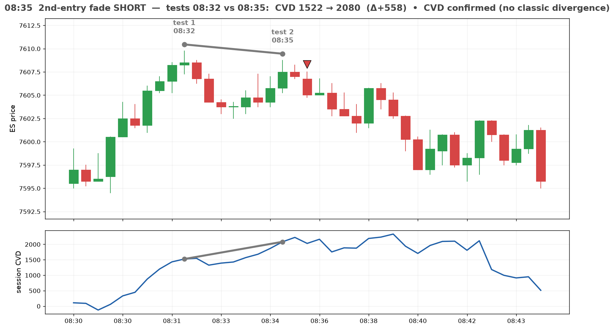
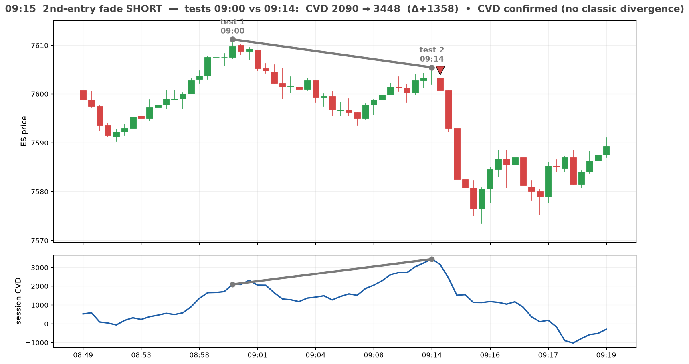
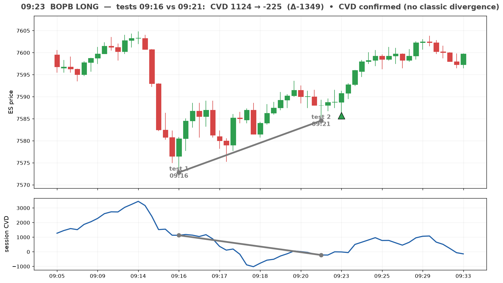
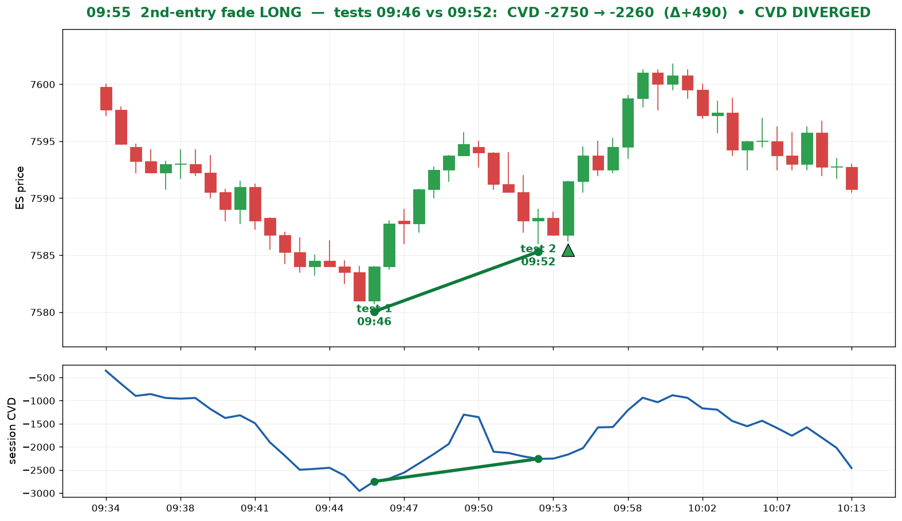
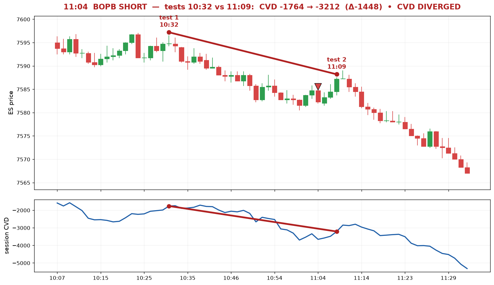
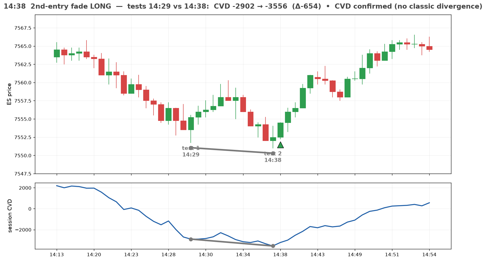
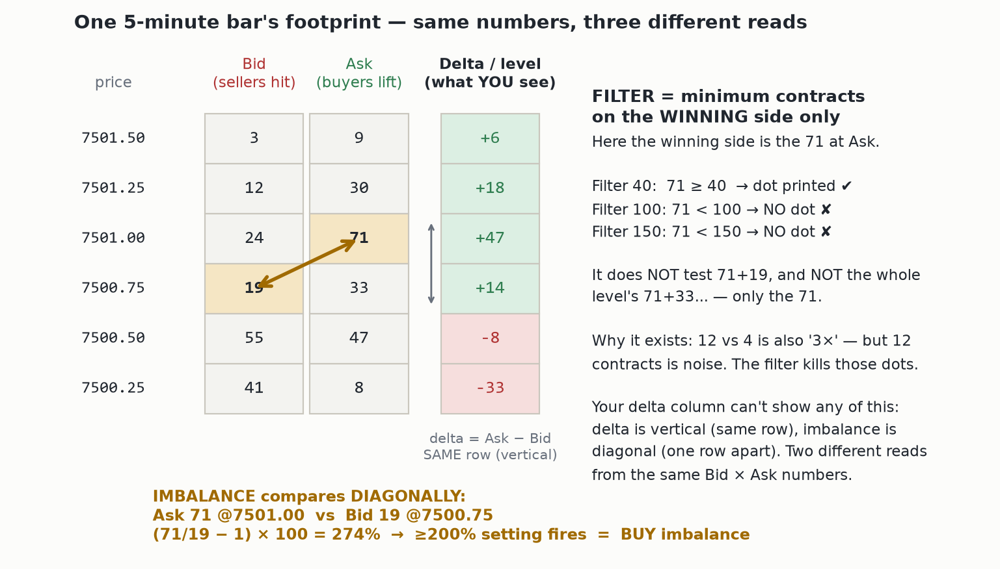
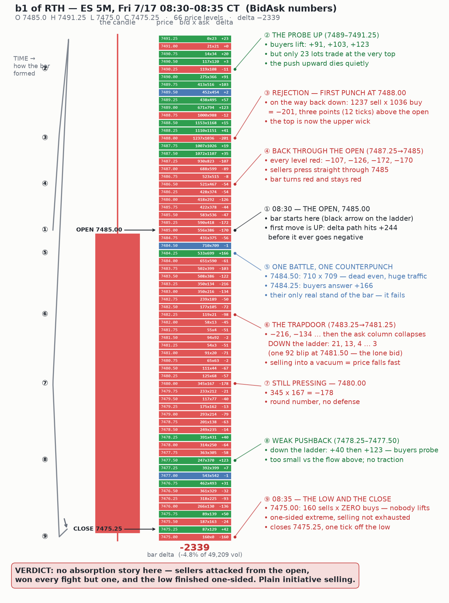

CVD at the two tests of the extreme — Samir's 6 hand-marked setups, 7/13. Scoreboard: 2 classic divergences, 3 absorptions, 1 trapped-trader. The signature at the fades is effort-vs-result (H5 v2), not momentum divergence. NOT validated: no control count yet. Companion artifact: "ES 7/13 — CVD Divergence at the 6 Marked Setups".







Why the delta-per-level display can't show imbalances: delta is vertical (Ask − Bid, same price), imbalance is diagonal (Ask at p vs Bid at p−1 tick, guide formula (win/lose − 1)×100). The Filter tests ONLY the winning side's contracts (MZpack user guide p.17) — not the level total. Uses the guide's own 71×19 = 274% example.

Real recorded data (delta −2339 on 49.2k). Chronological ①–⑨: open, probe up, rejection at 7488, open run over, the 7484.50 battleground (710×709), the liquidity-vacuum trapdoor, no defense at 7480, weak pushback, one-sided low. Verdict: plain initiative selling — the "no signal" reference bar, opposite character to the 7/13 fade setups. Formation sequence evidenced by MaxDelta +244 printing before MinDelta −2586.